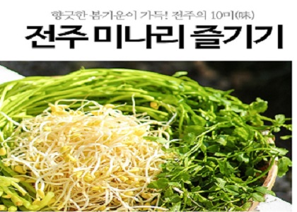

전주에서는 연간 2200t의 미나리가 재배된다.
국내 생산량의 30∼40%다.
미나리는 지역의 대표 농산물이면서 맛의 고장 전주를 대표하는 ‘10미’ 가운데서도 단연 으뜸으로 꼽힌다.
전주시가 2020년부터 미나리를 활용한 가공식품 개발에 많은 공을 들이는 이유다.
미나리는 강력한 해독 작용으로 숙취 해소에 도움을 준다.
비타민 A, B1, B2, C와 무기질이 풍부한 대표적 알칼리성 식품으로 미세먼지나 산성화된 몸을 정화시키는 데도 효과가 있는 것으로 알려져 있다.